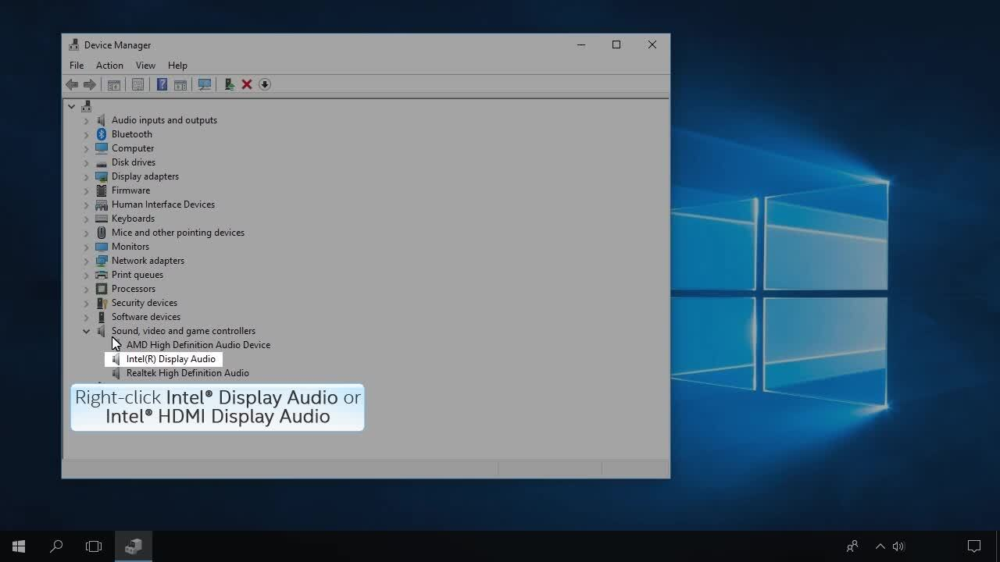

How to Uninstall your Intel® Graphics Drivers from Devices Manager
Content Type: Install & Setup | Article ID: 000005598 | Last Reviewed: 02/05/2025
Before uninstalling your driver, review the reasons for uninstalling below.
Reasons for uninstalling a driver
- A technical support representative prompts you as part of troubleshooting an issue.
- Your last driver installation didn't complete successfully, or ran into errors.
- A previous driver had better functionality for your specific needs.
Note
The Intel® Display Audio driver is packaged with the Intel® Graphics driver. If needed, they have to be uninstalled separately.Uninstalling a Device Driver via the Device Manager Method

For a quick review of the steps outlined in the video, read the points below.
- Disconnect from the internet to ensure Windows will not automatically update the driver*.
- Open the Device Manager using the steps provided for your operating
system.
- Windows 7*: Click Start; at the run prompt, type: devmgmt.msc
- Windows 8.1*, Windows® 10, and Windows 11*: Press the Windows and X keys together, and select Device Manager.
- Expand the category needed (Display Adapters or Sound, video, and game controllers).
- Find and right-click the device you want to uninstall
- Select Uninstall Device.
- In the dialog check the box Delete the driver software for this device.
- After the uninstall process finishes, restart the computer.
- If the driver does not fully uninstall, repeat steps 2 through 4.
For more information about Graphics Driver Installation, please visit our Driver Installation Hub Article.
Note
If you don't have an Intel audio driver, contact your computer manufacturer for more information on how to uninstall the audio driver for your system.